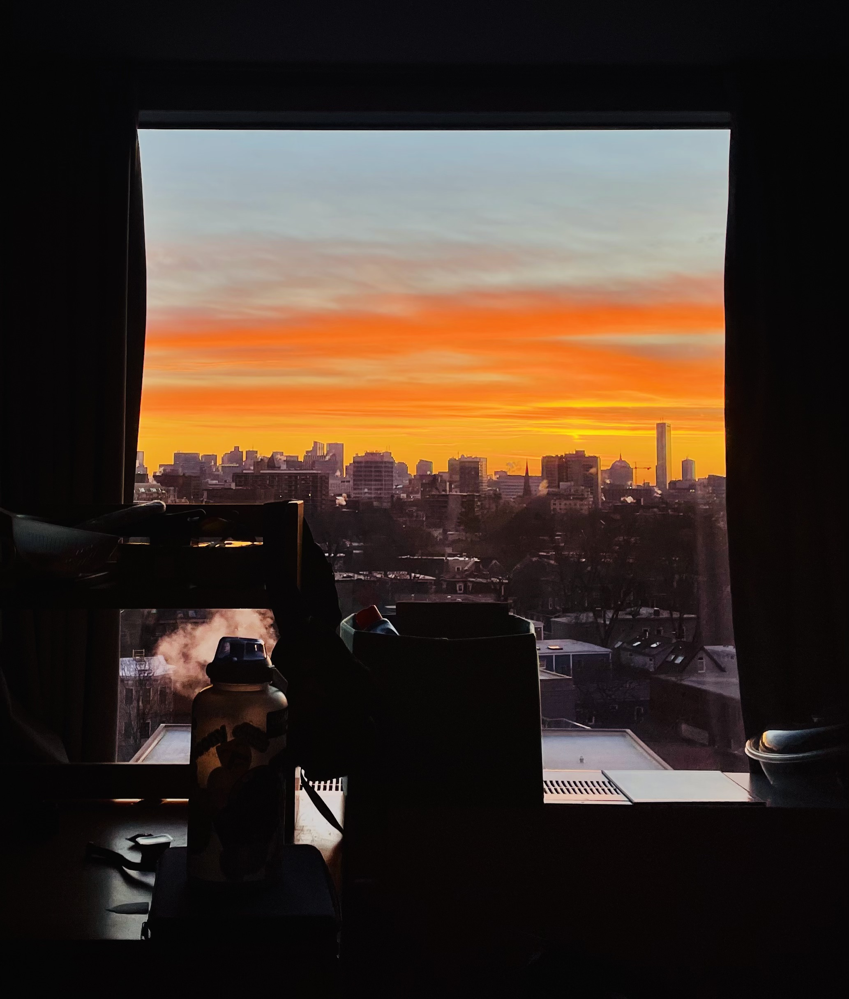
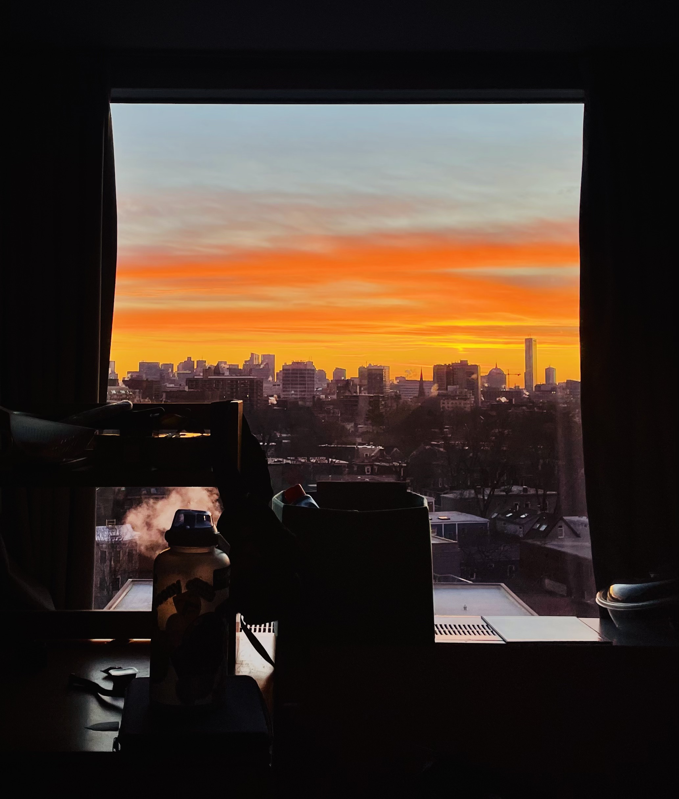

With all of the different tools and machines in the fabrication shop, the world is my oyster. However, I find it hard to think of an idea for a final project that is both fun and innovative in some way. Throughout school, when lessons are taught in math and science, there is a right and a wrong answer. Perhaps, there may be a few different ways to get to the answer, and we have been taught of certain approaches to get there. Therefore, it’s rare for me to have the opportunity to make something from scratch like this. As a result, creativity only comes in some small sparks every now and then when I need to add a unique touch to something that has already been established.
 

So tldr: my creativity is a bit crusty and rusty, and um…. my ideas are like lol…. Idk
BUT, I really want to give this class my best shot at doing things I have never done before.